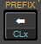

Preferences
The Preferences dialogue box allows you to modify the Simulator parameters. It can be found in the ON popup menu: Alt–O "Preferences…".
Press "OK" or "Apply" to activate the new settings for the current session. The settings are not saved on the hard disk and will not become permanent until you save the current session. If you have unchecked "Save on exit" (see below), you must save the current session manually by pressing Ctrl–M.
The following items can be set in the dialogue box. Default values are used if no memory file is found on startup.
Simulator
- Strict HP-15C behaviour
The real HP-15C stores numbers internally with 10 digits, and rounds each result to the 10th digit. The Tcl/Tk interpreter stores numbers in the IEEE-754 format with 17 digits and a different rounding mechanism. When this option is enabled, the number of relevant digits is set to 10 and each number is rounded to the 10th digit.
The following calculation shows the effect of the two settings:
f FIX 9
2 ENTER 3 ÷
0 . 6 6 −
1 0 0 0 ×
Result with "Strict HP-15C behaviour" enabled (10 digit precision):
Result with "Strict HP-15C behaviour" disabled (17 digit precision):
In the second case, the number is only rounded to the last digit on the display. Internally the number is stored as
6.666666666666599, giving full precision. For more information, see the section on number encoding in the Differences section.Default: Off
- HP-15C digit separators after reset
By default, e.g. after a reset, the Simulator separates the integral and the fractional parts of a number with a comma, and separates groups of three digits in the integer part with a period (a decimal point).
On the original HP-15C from HEWLETT-PACKARD the digit separators were the other way round. When this option is checked the Simulator behaves like the original HP-15C. Even after a reset.
Default: oFF
- Pause length
Time in milliseconds that a program pauses during execution when it encounters a f PSE statement. The valid range is 0 to 2000.
This is also the time the display update is delayed after the last key is released in f PREFIX, g MEM and f i.
Default: 1000
- Delay value
Time in milliseconds that a program pauses after each statement. A value of around 100 gives a good idea of the performance of the real HP-15C. A value of 0 will give maximum performance. The valid range is 0 to 999.
Default: 0
- Access "f" and "g" functions directly
If this option is enabled, you can click directly on the gold and blue secondary functions. You do not need to press or click f or g first. If disabled, the gold functions cannot be clicked and clicking on a blue function is the same as clicking on the main key function.
Default: On
- Highlight functions
This option enables mouse-over effects for the blue and gold labels, when direct access to the f and g functions is enabled.
Default: On
- Key sequence indicator
The key sequence indicator is a small black square in the lower left corner of the display. It indicates an incomplete sequence. For example, if you press STO, the indicator will light up. If you now press 7 the indicator goes out, because the key sequence is complete. If instead, you continue with the + key, the indicator remains on. The Simulator is still waiting for the number of the storage register.
The key sequence indicator is disabled during program execution.
This function is inspired by the similar function on the DM15/DM15L from SwissMicros.
Default: Off
- Save memory on exit
If selected, the continuous memory is activated. When you exit the Simulator, the state will be saved to disk.
If you uncheck this option, you will have to save the memory manually to make the new setting permanent!
Default: On
- Use "C locale" for clipboard
When this option is selected, a period is used as decimal point in the clipboard. This setting is independent of the current display settings for the decimal point and the digit separator.
Default: Off
- Copy program when in PRGM mode
By default, pressing Ctrl–C copies the contents of the X register to the clipboard. If this option is enabled and the Simulator is in PRGM mode, Ctrl–C copies the program code to the clipboard instead.
Default: Off
- Save window position
The last window position of the simulator is saved when set. The simulator will open at this position, the next time it is started.
If the simulator window is not fully visible at the old position, the value is ignored. The simulator is then placed by the operating system's window manager.Default: Off
Menus
- Show menu
On Windows and Linux, this activates a menu bar at the top of the simulator window.
On macOS, the menu bar at the top of the screen is always active.Default: Off (always checked under macOS)
- Native macOS popup menus
Earlier versions of Tcl/Tk did not allow fixed-width fonts in popup menus under macOS; a feature needed for the simulator popup menus. Newer combinations of Tcl/Tk and macOS; no longer have this limitation and native popup menus are now used by default. Disable this option if you experience problems with the stack and the memory popup menus.
Default: On
- Number of recent programs
The number of entries in the recent programs submenu. The valid range is between 10 and 30.
Default: 10
- Show full path
When this option is selected, the full path of a recently used program is displayed in the submenu. If not selected, only the base filename is displayed
Default: Off
- Program mnemonics
If this option is enabled, the program steps are displayed as mnemonics in the popup menu (Alt–S). If disabled, the program steps are displayed with their key codes. Note that this setting has no effect on the display.
Default: On
- Coloured program menu
When this option is selected, the following commands are displayed in colour in the program popup menu: LBL, RTN, GTO and GSB.
Default: On
- Lines per column in program menu
The program popup menu displays the program steps in a multi-column format. This value defines the number of program steps per column. The valid range is between 10 and 50.
Default: 30
- Register and label addresses with decimal point
This option controls how addresses of storage registers and labels between 10 and 19 are displayed. If enabled, the address is formatted with a decimal point, e.g.
,0or.0, and if disabled, as a two-digit integer, e.g.10.
This option changes the format in the following situations:
- Storage register menu
- Program menu (if mnenomics are enabled)
- GSB menu
- Documentation dialogue
- HTML export
Default: Off
- Two-column storage menu
By default, the storage popup menus display the available data storage registers in two columns. Deselect this setting if you want the storage menus to display all the data storage registers in one column.
macOS: This option has has no effect when "Native macOS popup menus" (see below) is enabled. macOS does not allow multi-column popup menus.
Default: On
- Storage register descriptions
The storage register description from a loaded program can be displayed in the storage menus. Only the first 25 characters of a description are used.
Default: Off
- Sort labels in GSB menu
This controls whether the labels in the GSB menu are sorted or whether they appear in the order in which they occur in the program. If the labels are sorted, the letter labels are sorted before the number labels.
Default: Off
- Matrix notation
Two different styles are available for the matrix content menus: One with row and column headings like in a spreadsheet and one with the "row,column" information before each matrix element.
Default: Rows/Columns
- Matrix separator
When a matrix descriptor is in the display, pressing Ctrl–C copies the contents of the matrix to the clipboard. One line for each row and the elements of a row are separated by the selected separator.
Be careful to select the "comma" separator as it may conflict with the thousands separator or the decimal point.Default: Semicolon
- Matrix submenus in stack menu
A matrix item in the stack menu can be either a submenu button or just a label. In the case of a submenu button, moving the mouse over the button opens a submenu with the contents of the matrix.
macOS: This only works if "Native macOS popup menus" are enabled.
Windows, Linux: If matrix submenus are enabled, clicking on an item, e.g. "y: A 2 2 ▶, does not scroll down the stack.Default: On
- Language
This option controls the language used for menus and pop-ups. By default, the system language is used. If this language is not supported, British English is selected. The new setting is active immediately, except for the Preferences dialogue box. This dialogue box will use the new language the next time it is opened.
Default: System
Files
HP-15C Programs
- Encode programs in UTF-16 (LE)
By default, the program files are encoded in UTF-16 (LE). Disable this option to encode them using the system default encoding.
Note that HTML exports are always encoded in UTF-8.Default: On
- Confirm overwrite
Defines the behaviour of the Save Program dialogue box if the selected file already exists. If enabled, the dialogue box will ask for confirmation before overwriting the existing file. If disabled, the file is overwritten without confirmation.
Default: On
HTML Files
- Structure in English
This setting determines the language used for HTML headings (
<h#>), such as "Program Title", "Usage", etc., when exporting a program to an HTML file. If this option is selected, British English is used; if the option is unchecked, the currently selected menu language is used.
This also sets a period as the decimal separator and a comma as the thousands separator.This setting has no effect on the text of the program description itself.
Default: On
- Indent subroutines
If this option is enabled, subroutines are indented in the HTML export to show the program structure. The start of a subroutine, i.e. f LBL followed by A…E, 0…9 or . 0…. 9 and the return command g RTN are not indented.
Default: On
- Warn on missing documentation
If this option is enabled, a warning message is displayed if you export a file as HTML and one of the following elements is empty:
- Program
- Program Title
- Usage
Default: On
- Single-column program listing
By default, the program listing uses one column for programs with up to 25 steps, two columns for programs with up to 50 steps and three columns for programs with 51 or more steps. If this option is enabled, the program listing will always use only one column.
Default: Off
- Keys in black and white
By default, the keys are printed in colour. Enable this option to print them in black and white.
This can be useful if you print out the documentation on a black and white printer, such as a laser printer.Default: Off
Description
- Open after loading a program
If enabled, the Program Description dialogue box opens automatically after a program has been loaded.
If the program has no documentation, the Program Description dialogue is never openened automatically.Default: Off
- Automatic preview
If this option is enabled and the "Usage" field of a program description contains HTML tags or entities, the Program Description dialogue box opens in Preview mode. Otherwise it opens in Edit mode. Once the dialogue is open, you can switch between the two modes.
Default: On
- Always insert Unicode characters
If checked, the symbols are inserted as Unicode characters. If unchecked, HTML entities are inserted. This has no effect on the Preview mode; Unicode characters and their corresponding HTML entities will look the same.
Default: On
- Toolbar style
The menu buttons in the toolbar for the HTML tags can display icons or text.
Default: Icons
- Show icons in tag menu
Enables or disables icons in the context menu. Under macOS, the context menu does not normally have icons for the menu item.
Default: Window, Linux: On; macOS: Off
- Highlight tags
This section provides options to configure how tags are displayed in the "Usage" field of the Program Description dialogue box.
Defaults: Colour: #800080 (RGB 128, 0, 128), bold: checked
- Text markers
Allows you to select the colour used to highlight all occurrences of a text in the program description in Edit mode.
Default: #FFFF00 (RGB 255, 255, 0)
- Show resources in tabs
Resources can be grouped either as a block or in individual tabs for Labels, Memory Registers and Flags.
This does not affect whether the resources are displayed at all. This is controlled by the "Resources" button below the description.
Default: On
- Author information
Information about the authorship of programs can be added in this field. This value is inserted into an empty "Usage" field, when the Program Description dialogue box is opened.
Default: Empty
Devices
- DM15 Support
This activates the support for the DM15, i.e. the menu items for the DM15 will be visible or hidden.
Default: Off
- Serial Interface Port
The number of the serial port assigned by the operating system to the USB port of the DM15.
Default: Not set
- Timeout
The timeout in seconds for the serial port.
Default: 2 seconds
- Number of registers
Sets the number of data storage registers available in the HP-15C Simulator. The three options reflect the firmware versions available on the DM15.
Default: 64 registers
- Serial Interface Port
- HP 15C CE Support
This activates the support for the HP 15C CE, i.e. the menu items for the HP 15C CE will be visible or hidden.
Default: Off
- Number of registers
Sets the number of data storage registers available in the HP-15C Simulator. The two options reflect the available modes on the HP 15C CE.
Default: 96 registers
- 192 register mode
After a reset, the HP 15C CE's 192-register mode has 94 storage registers and 99 pool registers. This is where this mode differs from all other modes on all HP-15C derivates and clones. After a reset, the modes have 19 storage registers and the remaining are pool registers.
If this option is activated, the simulator will behave like the HP 15C CE. If it is deactivated, the simulator has 19 storage registers and 174 pool registers after a reset.
Default: Off
If the DM15 support or the HP 15C CE support is disabled, the "Number of registers" is set to the smallest value for the other device. If support for both is disabled, the Simulator reverts 64 registers as on the original HP-15C. - Number of registers
- Transmitted data
The ten check boxes, five for reading and five for writing, determine what data is exchanged between the calculator and the HP-15C Simulator.
Default: "Program" checked for both reading and writing.
- Ask for each operation
When this option is selected the data to be exchanged between the source and the target device is interactively queried for each operation. The selection is set as the default for the next operation.
Default: On
Fonts
- Font set
The layout of the Simulator is highly dependent on the combination of fonts, font sizes and the monitor resolution. The Simulator therefore provides predefined font sets for common display resolutions. These font sets have been fine-tuned to give a good representation of the real HP-15C body aspect ratio which is the "Golden Ratio".
The following table lists the available font sets for each platform and display resolution:
Platform Font set Size Fonts used in set UNIX/Linux
Mac OSDejaVu fonts small, normal, large and huge DejaVu Sans Microsoft fonts small and normal Arial
Microsoft Sans SerifMS Windows
(all versions)Microsoft fonts small, normal, large and huge Arial
Microsoft Small Fonts
Microsoft Sans SerifRemarks:
- The "HP-15C Simulator Font" is used with all sets.
- If you want to change fonts or font sizes or add new font sets, you need to edit the Simulator source code. I suggest to not change existing font sets at all.
- "DejaVu" fonts can be found on the Internet (see the Links page).
- Extended Unicode chars for key faces
The Simulator can use certain Unicode characters to make the keys look more like the original HP-15C keys.
All current operating systems should provide fonts with the necessary characters. If this option is enabled and a character is not available, you will see keys like this
instead of  or instead of .
In this case, you should disable this option or install a suitable font.
Default: On
- Graphic display instead of "HP15C Simulator Font" (Windows only)
When this option is selected, a graphical display is used instead of the the "HP-15C Simulator Font".
This is useful if you need administrator rights to install fonts but cannot get them; e.g. on company computers.
Please note that this will reduce the Simulator performance by about 30%!Default: Off
Help File Browser
This setting allows you to specify the browser used to display the Online Help.
When the Simulator is started for the first time, or if no browser is set, the Simulator checks for available browsers in all
directories specified by the PATH environment variable. If available, the operating system's default method for
opening a web page is added to the top of the list of browsers. This results in the following list of possible browsers per operating system:
| Platform | Browser list |
|---|---|
| UNIX/Linux | firefox chrome mozilla opera konquerer |
| macOS | open firefox safari chrome opera |
| Windows | start firefox safari chrome mozilla opera iexplore hh |
Remarks:
- open in the macOS list will always run the default browser.
- start in the Windows list will always run the default browser.
- hh is the browser used with the online help on Windows XP/Vista/7.
All the browsers found are listed, and the first one in the list is set as the Help file browser. You can select another browser from the list or use the "Browse…" button to find another one.